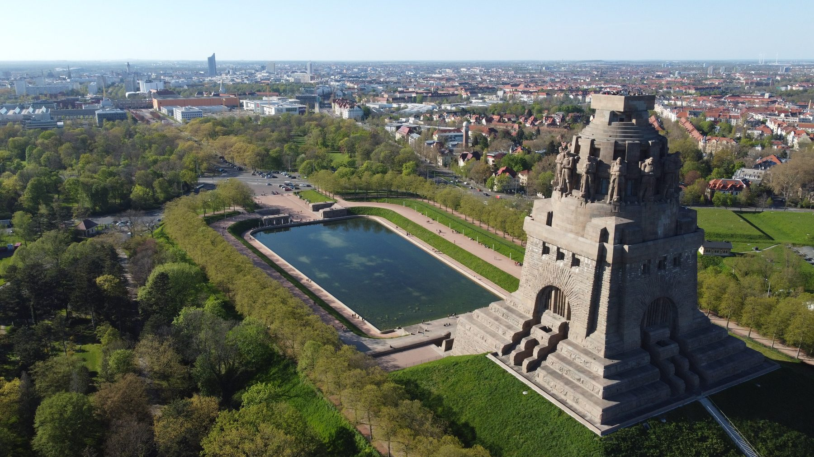
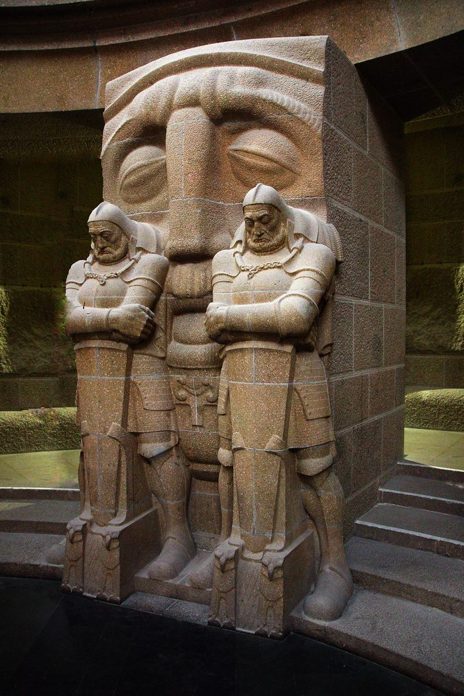

Besuch
Straße des 18. Oktober 100.
Das Denkmal wird von der Stiftung Völkerschlachtdenkmal Leipzig betrieben, das Museum FORUM 1813 gehört zum Stadtgeschichtlichen Museum Leipzig. Der Förderverein finanziert Bauvorhaben — Karten und Führungen gibt es vor Ort.
Startseite → Besuch

Zeiten und Eintritt
Ganzjährig geöffnet, im Winter kürzer.
| April bis Oktober, täglich | 10–18 Uhr |
|---|---|
| November bis März, täglich | 10–16 Uhr |
| Geschlossen | 24.12. und 31.12. |
| Erwachsene | 12 € |
|---|---|
| Ermäßigt | 10 € |
| Familie (bis zwei Erwachsene, Kinder und Enkel von 6 bis 18 Jahren) | 24 € |
| Kinder bis 6 Jahre | frei |
Das Ticket gilt auch für das FORUM 1813, das Museum zur Völkerschlacht direkt neben dem Denkmal. Für Leipzig-Pass, Leipzig Card und Gruppen gelten gesonderte Preise; Auskunft gibt der Besucherservice.
Stand der Angaben: August 2026, nach Auskunft der Stiftung Völkerschlachtdenkmal Leipzig.
Anfahrt
Adresse: Straße des 18. Oktober 100, 04299 Leipzig
Straßenbahn: Linie 15
S-Bahn: Linien S1, S2 und S3
Auto: kostenlose Parkplätze am Gelände
Barrierefreiheit vor Ort
Rollstuhlfahrerinnen und Rollstuhlfahrer erreichen das Gelände und gelangen über eine Rampe hinein. Aufzüge führen bis in die innere Galerie.
Ein taktiles Leitsystem führt blinde und sehbehinderte Besucher vom Eingang durch das Bauwerk. Assistenzhunde sind erlaubt.
Die Rampen wurden 2022 gebaut, der Aufzug 2003 wieder eingebaut, der erste barrierefreie Zugang 2007 geschaffen — alle drei mit Geld dieses Vereins.
Besucherservice
+49 341 2416870
stiftung-voelkerschlachtdenkmal-leipzig.de
Dort gibt es auch Auskunft zu Führungen, Gruppen und aktuellen Veranstaltungen.
Noch nicht offen
Die Katakomben sehen bisher nur geführte Gruppen.
Unter der Krypta liegt eine Ebene mit einer Ausstellung zur Entstehungsgeschichte des Denkmals. Für die dauerhafte Öffnung fehlt ein zweiter, gesetzlich vorgeschriebener Rettungsweg. Der Verein sammelt dafür.
